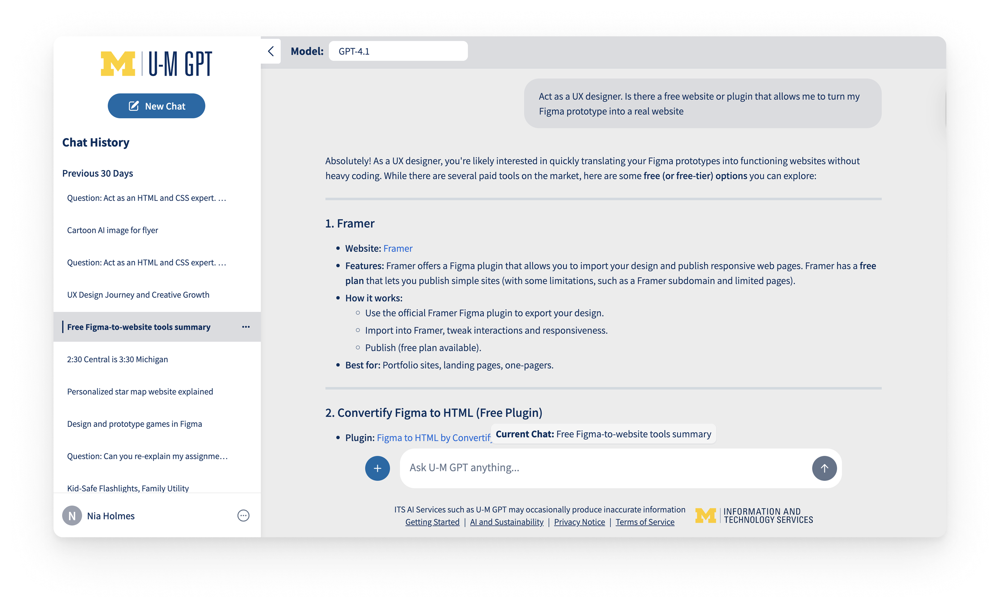

Project Overview
Title: U-M GPT Redesign & Feature Implementation
Design Challenge: Redesign U-M GPT's interface and optimize it through feature implementations for better student use.
Team & Timeline: This is a solo project; September 18th, 2025 - Present
Role: UI/UX Designer
Industry: Product Design
Tools: Figma
Table of Contents
What Is U-M GPT?

U-M GPT is one of University of Michigan's GenAI Resources. It utilizes a model of ChatGPT and has access to U of M-specific information. The application focuses on accessibility, privacy, security, and equity for all individuals of the U-M community that use it.
Design Summary
This redesign concentrates on the implementation of folder creation. These folders would have specific focuses based on document uploads and assigned “role” from the user. This design allows for 3 key elements that are particularly useful to students:

- Organization: Chats of similar topics go into the same folder.
- Efficiency: The user needs only to upload documents & name a “role” once.
- Topic-specific Responses: Meaningful responses based on information from uploaded documents & assigned “role.”
My Design Thinking Process
I identified that design thinking would help me produce a user-centric solution to the design challenge, especially since there is no formal interviewing for this project.
Emphasize conducting research to understand the users.
Stakeholder Remarks
- Needs a better user interface, it's currently plain & basic
- Students need to know what they are able to do with it, and what it can do
- The application can benefit from student's perspective and optimization
Peer Remarks
- The application is slow; it takes a while to send responses
- U-M GPT uses a model of ChatGPT, so why should U-M GPT be used instead?
Define combining research to identify where user's problems exist
Taking U-M GPT's representative's and my peer's remarks into consideration, I decided the most prominent user problem was efficiency, personalization, and understanding.
- Efficiency users felt the application moved too slowly, compared to other GenAI tools, like ChatGPT
- Personalization the representative expressed the interface is plain & basic, while peers expressed they didn't see a real reason to use it since it utilizes a model of ChatGPT
- Understanding the representative expressed how they needed to ensure the users know what the tool can do and how to use it
Ideate generating a range of crazy, creative ideas

- A way for students to understand what U-M GPT can do through an automated message from U-M GPT (understanding)
- Feedback after a user sends in a prompt, notifying them of how long until the response is shown (efficiency, personalization)
- A way to switch between each U-M GenAI tool within the same site (efficiency)
- U of M-specific recommended chat prompts, upon opening the site (personalization)
- A more organized side bar so there isn't an endless list of previous chats (efficiency)
- Automatic prompt suggestions/corrections that help user's prompts follow AI prompt guidelines (prompt engineering - efficiency, personalization)
- A way for users to organize their chats through folders (efficiency, personalization)
Prototype building tactile representations for a range of your ideas
The mixing/re-building of ideas:
- U of M-specific topics may not always be the reason for using the GenAI tool , so include a mixture of U of M topics, as well as other topics
- When creating folders, users can upload documents and assign a role (like, “Act as a UX designer”), so U-M GPT has all the information it needs when answering questions in chats in that folder
- Include a “Response displaying in 5…” feedback message to keep the user updated
Test get user feedback on the prototype
I conducted a usability test of my prototype with a partner in class.
Task & Follow-up Question
- Show me how you would view your existing folders
- Show me how you would create a folder
- Show me how you would navigate out of the folder you are currently in
Follow-up Question: Ask how they felt completing each task. Was it easy? Was it difficult? (Gives me intel on whether or not the process of locating, creating, and exiting folders is simple.)
Key Findings:
- I should make multiple ways to create and view folders; the user expressed that they thought the plus icon within the chat bubble had more to do with the chat itself, rather than creating a folder.
- The actual folder creation process is straightforward
- I should make it easier to switch between folders/start new chats; users are still able to chat with U-M GPT if they are not in a folder, so if they want to chat outside of a folder, I should make it easier for them to do that, without complicating the act of starting a new chat within a folder.
Design Recommendations
- Make the “Folders” button in the collapsed side bar open a new section in the side bar that is just a list of all the user's folders, and also has a way (like a “+”) the user can create a folder from there.
- Make it easier for the user to navigate between folders, like using a breadcrumb trail (e.g. U-M GPT > SI 261).
Implement make adjustments based on the user feedback
Taking into account the findings my usability test gave me, I optimized my prototype further. I created a way for users to quickly exit out of their current folder and switch between their existing folders.